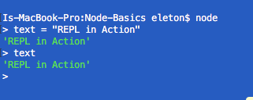

In network programming, Node.js give us the opportunity to add server-side code to our applications with JavaScript. We will be able to create a server to handle the client's requests, and also create HTTP clients. Now we can read and write data to and from different places and to millions of users.
Node.js uses the V8 engine created by Google's engineers for the Google Chrome web browser.
Here you can find all pertinent subjects. Node.js is based on Modules which are basically libraries. Some of this libraries come built-in with Node.js and are available to you with the download. Others are built by developers; most of them open source.
Once you have it installed simply type node on the terminal and run it. Node.js has REPL, which stands for "READ EVAL PRINTLOOP. With REPL now you just have to add your code and it will be evaluated and printed right in the terminal. See below:
Let say that you have cloned this into your computer from GitHub. There is a JavaScript file that once you open it will print "Hello Node.js" in the terminal. To open this file via Node.js simply navigate to the directory containing the color.js file type in the terminal node followed by the name of the file like this node colors.js
Node comes with built in functions and modules included with your instalation. Check Node's documentation for modules here:
Packages are a way for JavaScript developers to reuse code. These bits of reusable code are called packages, or sometimes modules. A package is just a directory with one or more files in it, that also has a file called "package.json" with some metadata about this package. npm (Node Package Manager) it's a way to reuse code from other developers, and also a way to share your code with them, and it makes it easy to manage the different versions of code.
A package (also called a module) can be downloaded with the command;
npm install package_name
The package will be downloaded to a directory node_modules located in your current directory (if it doesn't already exists)
Since we are no longer using client-side code, we must find a way to access files, libraries and data. Node.js uses modules and the keyword require for that. In Node.js, files and modules are in one-to-one correspondence (each file is treated as a separate module). Normally for best practice you'll store it in a variable with the same name as the module like this
var module_name = require("module_name");
Let see this in action with an example. The Node-Basics directory contains two .js files. I've written some code in nodeBasic.js that uses data from colors.js. Let's see both files side by side.
When you run node nodeBasics.js , the REPL shows this:
The default behavior for the installation is for the module to be installed locally. However, if you want to use it as a command line tool, then you want to install it globally. The command to install globally uses the flag -g, for example:
npm install express -g
You can specify your application dependencies with a package.json file. This is the best way to manage locally installed packages. As this file contains all dependencies information, you don't have to install every package at a time and reduces the chances of error. You can create package.json running the command
npm init
Follow the steps in the terminal to configure it. The easier (and more awesome) way to add dependencies to your package.json is to do so from the command line, flagging the npm install command with:
npm install module_name --save
The sky is the limit. What you can do with it depends only on your imagination. For now lets introduce a new topic. There are two built in modules that will open some impresive features. The HTTP and URL modules.
Go to HTTP and URL Modules from here.